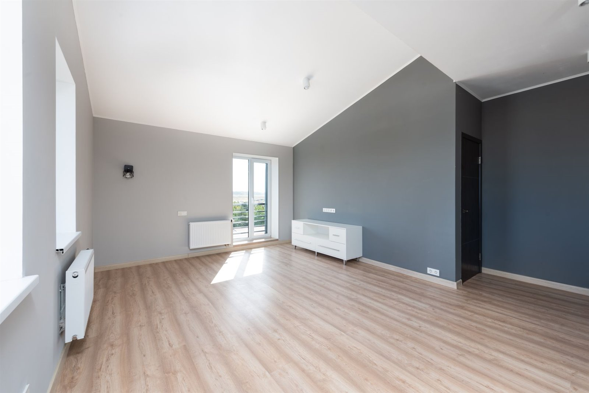
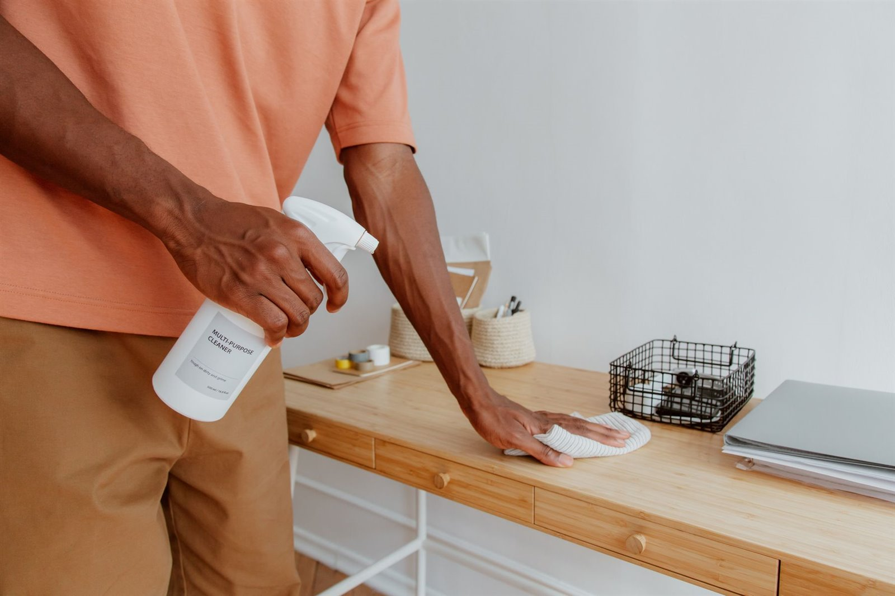

Magyar és német egyeztetés tulajdonosokkal, Airbnb-házigazdákkal, irodákkal és ingatlankezelőkkel.
Takarítás a soproni óvárosban és Airbnb-lakásokban
Takarítás, amely vendégkész állapotban tartja a soproni óváros lakásait és Airbnb-ingatlanait.
A macskaköves óvárostól a Lővér üdülőházakig Sopron műemléki épületei és rövid távú kiadásai nem egy általános takarítási sablont, hanem az ingatlanhoz igazított munkát kívánnak. Rendszeres lakástakarítás, nagytakarítás, Airbnb vendégváltás, irodai takarítás és költözés utáni rendbetétel, magyar és német egyeztetéssel, fotós visszajelzéssel és praktikus feladatlistával tulajdonosoknak, kezelőknek és házigazdáknak.

Mire figyelünk?
Tiszta átadás, követhető feladatlista, fotós visszajelzés.
Kérés szerint fotók a kiinduló állapotról, a fontos részletekről és az átadásra kész eredményről.
Óvárosi lakásokhoz, Lővér üdülőházakhoz, irodákhoz és külföldről kiadott Airbnb-ingatlanokhoz igazítva.
Az oldalon szereplő képek illusztrációk, amelyek tipikus munkafolyamatokat és várható eredményeket mutatnak.
01
Miért fontos a professzionálisan szervezett takarítás?
Egy soproni lakás, iroda vagy Airbnb-ingatlan tisztasága közvetlenül befolyásolja az első benyomást, különösen egy olyan műemléki városban, ahol sok vendég kifejezetten a Tűztorony és az óváros macskaköves utcái miatt foglal szállást. A jó takarítás nem csak felmosás: előre tisztázott hozzáférés, helyiségenkénti feladatlista, higiéniai fókusz, időzítés és használatra kész átadás.
Kevesebb félreértés
A feladatokat előre egyeztetjük: mely helyiségek fontosak, van-e extra zsíros konyha, vízköves fürdő, felújítási por vagy vendégérkezési határidő.
Jobb átadási állapot
Költözés, vendégváltás vagy megtekintés előtt a tiszta padló, fürdő, konyha, üvegfelület és pormentes bútor sokat javít az összképen.
Távolról is követhető
Külföldön élő tulajdonosoknál és ingatlankezelőknél különösen hasznos, ha a kiinduló állapot és a kész eredmény fotókon is látható.
02
Milyen takarítási munkákban segítünk?
A munka tartalmát mindig az ingatlan állapota, a határidő, a hozzáférés és a kívánt átadási szint alapján érdemes pontosítani. A cél a praktikus, tiszta, használatra kész állapot.
Rendszeres lakástakarítás
Lakott vagy rendszeresen használt soproni lakások alapvető rendben tartása: padlók, felületek, konyha, fürdő és gyakran használt terek.
Nagytakarítás
Alaposabb takarítás, amikor a normál körnél több figyelmet igényel a konyha, fürdő, por, vízkő, szekrényfelület vagy régóta halogatott részlet.
Költözés előtti és utáni takarítás
Üres vagy részben kiürített lakások rendbetétele átadás, beköltözés, bérlőváltás vagy eladás előtti megtekintés előtt.
Airbnb vendégváltás
Vendégérkezés előtti takarítás, ágyazás előkészítése, fürdő és konyha ellenőrzése, látható felületek és fotózható állapot.
Irodai takarítás
Kisebb irodák, tárgyalók, képviseleti terek és munkaterületek tisztább, rendezettebb állapotának fenntartása vagy látogatás előtti frissítése.
Felújítás utáni takarítás
Festés, javítás vagy kisebb felújítás után keletkező por, apró törmelék és felületi szennyeződés rendezése, mielőtt a helyiség újra használatba kerül.
Üdülő- és ritkán használt lakások
Időszakosan használt soproni lakások frissítése érkezés, hosszabb üres időszak vagy tulajdonosi látogatás előtt.
Ingatlan előkészítése vendégek előtt
Vendég, bérlő, vevőjelölt vagy irodai látogató érkezése előtt a legfontosabb látható részletek rendezése.
03
Tipikus takarítási helyzetek soproni ingatlanoknál
A takarítási igény ritkán csak egy helyiségről szól. Egy olyan városban, ahol az óvárosi lakások és a Lővér üdülőházak szezonban szinte naponta fogadnak új vendéget, az időzítés gyakran fontosabb, mint maga a takarítás: vendég érkezik, bérlő költözik, irodai látogatás várható, vagy egy felújítás után gyorsan használhatóvá kell tenni a teret.
- Airbnb és rövid távú kiadásGyors, követhető felkészítés vendégérkezés előtt, ahol a fürdő, konyha, ágynemű és látható felületek különösen fontosak.
- Bérlőváltás és költözésÜres lakások, szekrények, padlók, fürdők és konyhák rendbetétele, hogy a következő használó tiszta állapotot kapjon.
- Felújítás utáni porFestés, faljavítás vagy kisebb szerelés után a finom por és nyomok eltávolítása gyakran külön munkát igényel.
- Irodák és képviseleti terekMunkaterületek, tárgyalók és vendégfogadó részek frissítése, amikor a rendezett megjelenés üzleti szempontból is fontos.





A képek illusztratív példák: tipikus takarítási helyzeteket és elvárt állapotot mutatnak, nem konkrét elkészült ügyfélmunkák.
04
Előtte-utána takarítási helyzetek
A takarítási eredmény akkor hiteles, ha a változás reális: kevesebb por, tisztább konyha, használható fürdő, rendezett padló és átadásra kész állapot.
Felújítási por és nyomok
Festés, fúrás vagy kisebb javítás után a finom por gyakran a padlón, szegélyeken, pultokon és kapcsolók körül marad.
Használatra kész helyiség
A cél nem steril látvány, hanem tiszta, áttekinthető helyiség, amelybe vissza lehet költözni, vagy amelyet vendégnek át lehet adni.
Fotós visszajelzés
Távolról egyeztetett takarításnál kérés szerint fotók mutathatják, hogy a kritikus részek valóban rendezett állapotba kerültek.
05
Kinek segítünk?
A takarítás különösen akkor értékes, ha az ingatlan használatban van, vendég érkezik, tulajdonos távol él, vagy az átadásnak konkrét határideje van.
Külföldön élő tulajdonosok
Fotók, hozzáférés, időzítés és átadás távolról is követhetően.
Airbnb-házigazdák
Vendégváltás előtti állapot, gyors kommunikáció és látható részletek ellenőrzése.
Irodák és céges terek
Tárgyalók, munkaállomások és vendégfogadó részek tisztább megjelenése.
06
Takarítási ellenőrzőlista
A végleges lista az ingatlan állapotától függ, de ezek a pontok segítenek gyorsan eldönteni, mire kell fókuszálni.
Konyha
Pultok, mosogató, főzőlap, külső szekrényfelületek, látható zsírosodás, szemetes és padló.
Fürdőszoba
Mosdó, zuhany, kád, WC, tükör, vízkő, csaptelepek, padló és vendég számára feltűnő részletek.
Szobák és közlekedők
Porszívózás, felmosás, portörlés, kapcsolók és látható felületek tisztítása.
Üveg és tükrök
Tükrök, üvegfelületek, ujjlenyomatok és olyan részek, amelyek fotón vagy megtekintésen rögtön látszanak.
Por és felújítási maradvány
Szegélyek, kapcsolók, ajtókeretek, padlósarkok és felújítás után megmaradó finom por.
Átadás előtti ellenőrzés
A legfontosabb látható pontok áttekintése, hogy az ingatlan vendég, bérlő vagy tulajdonos számára rendezettnek hasson.
07
Munkatartalom, előkészítés és ajánlati tényezők
A professzionális takarítás Sopronban akkor működik jól, ha a feladat nem általános ígéretként, hanem konkrét ingatlanhelyzetként van kezelve: mekkora a lakás, milyen állapotban van, mennyi a vízkő, por vagy zsírosodás, és mikorra kell átadható állapot.
Mi befolyásolja az ajánlatot?
A lakás mérete, bútorozottsága, fürdőszobák száma, a szennyeződés mértéke, a felújítási por, a hozzáférés, a sürgősség és a kért extra feladatok mind számítanak. Fix ár helyett a látható állapot alapján érdemes egyeztetni.
Mi tartozhat bele?
A feladatlistától függően ide tartozhat rendszeres lakástakarítás, nagytakarítás, konyha és fürdő részletesebb tisztítása, költözés előtti vagy utáni takarítás, Airbnb vendégváltás és kérés szerinti fotós visszajelzés.
Mi nem tartozik bele?
Nem vállalunk biohazard takarítást, penészmentesítést, kártevőirtást, veszélyes hulladék kezelését, ipari speciális takarítást vagy magasban végzett külső ablaktisztítást. Ilyen esetben külön szakemberre lehet szükség.
Hogyan készítse elő az ingatlant?
Segít, ha a bejutás tiszta, az értékek és személyes iratok el vannak pakolva, a kért extrák listája előre ismert, és látható, mely felületek a legfontosabbak. Külföldi tulajdonosnál ez különösen csökkenti a félreértéseket.
Vendég- és bérlőváltás időzítése
Airbnb-lakásoknál, bérlőváltásnál és kiadás előtti átadásnál a határidő legalább olyan fontos, mint maga a takarítás. Vendégérkezés előtt az Airbnb-karbantartási segítség is hasznos lehet, ha kisebb hibák is látszanak.
Kapcsolódó javítások és karbantartás
Ha takarítás közben falnyom, fúrási por, kilazult rögzítés vagy kültéri rendezetlenség derül ki, külön egyeztethető az ezermester szolgáltatás, a festés és faljavítás, az ingatlan-karbantartás vagy a kertfenntartás. Távoli tulajdonosoknál a külföldi tulajdonosi koordináció adhat tágabb keretet.
08
Hogyan működik a folyamat?
A takarítás akkor működik jól, ha már az első üzenetben látszik a helyszín állapota, a határidő és a kívánt végeredmény.
Fotók és rövid leírás
Küldjön néhány fotót, címet vagy környéket, határidőt és azt, milyen állapotot szeretne elérni.
Feladatlista pontosítása
Tisztázzuk, mely helyiségek, felületek és problémák kerüljenek a feladatlistára.
Szervezett takarítás
A munka az egyeztetett prioritások szerint halad, figyelve a határidőre és a hozzáférésre.
Fotók és következő lépés
Kérés szerint fotós visszajelzés készül, és jelezzük, ha más karbantartási feladat is látható.
09
Miért a Sopron Property Services?
A soproni óváros lakásainál és az Airbnb-ingatlanoknál a takarítás gyakran együtt jár hozzáféréssel, időzítéssel, fotós visszajelzéssel és kisebb karbantartási észrevételekkel. Ezt egy átlátható, praktikus folyamatban kezeljük.
Soproni fókusz
Óvárosi lakások, Lővér üdülőházak, irodák és Airbnb vendégváltások gyakorlati helyzeteihez igazítva.
Magyar és német egyeztetés
Tulajdonosokkal, kezelőkkel, házigazdákkal és irodai kapcsolattartókkal is követhetően lehet egyeztetni.
Fotós visszajelzés
Kérés szerint a fontos részletekről fotók készülnek, ami távol élő tulajdonosoknál különösen hasznos.
Rendezett folyamat
A feladatlista, hozzáférés, határidő és átadás nem külön szálakon fut, hanem egyben kezelhető.
Praktikus problémaészlelés
Ha takarítás közben javítandó apróság látszik, azt külön jelezzük, nem keverjük össze a takarítási feladattal.
Reális kommunikáció
Nem ígérünk irreális átalakulást. A cél a tiszta, rendezett, használható ingatlanállapot.
10
Gyakori kérdések a takarításról
Gyakorlati válaszok tulajdonosoknak, Airbnb-házigazdáknak, irodáknak és ingatlankezelőknek.
Vállalnak rendszeres lakástakarítást?
Igen, rendszeresen használt soproni lakásoknál lehet egyeztetni visszatérő takarításról. A gyakoriságot az ingatlan használata, mérete és az elvárt állapot alapján érdemes meghatározni.
Mi a különbség a normál takarítás és a nagytakarítás között?
A normál takarítás a rendszeresen koszolódó felületekre koncentrál. A nagytakarítás részletesebb: több időt igényelhet a konyha, fürdő, vízkő, por, szekrényfelületek és ritkábban takarított részek miatt.
Vállalnak Airbnb vendégváltás előtti takarítást?
Igen, Airbnb-ingatlanoknál a vendégérkezési időpont, hozzáférés és a szükséges feladatlista alapján lehet egyeztetni. Rövid határidőnél már az első üzenetben érdemes jelezni az érkezés idejét.
Költözés után is tudnak takarítani?
Igen, költözés utáni takarításnál különösen fontos, hogy üres-e a lakás, maradt-e bútor, milyen állapotban van a konyha és fürdő, illetve van-e átadási határidő.
Felújítás utáni portakarítást is vállalnak?
Igen, kisebb felújítás, festés vagy javítás után lehet egyeztetni takarításról. Fontos jelezni, hogy finom porról, törmelékről, festéknyomokról vagy teljes helyiség-előkészítésről van-e szó.
Irodák takarítását is vállalják?
Igen, kisebb irodák, tárgyalók és képviseleti terek esetében lehet egyeztetni. A feladatot az iroda működése, hozzáférése és a kívánt időpont alapján kell pontosítani.
Külföldön élő tulajdonosként is kérhetem?
Igen, ha a bejutás, a döntési jogosultság és a fizikai hozzáférés tiszta. Kérés szerint fotós visszajelzés segíthet követni, mi történt a helyszínen.
Elég fotókat küldeni az ajánlatkéréshez?
Sok esetben igen, főleg ha látszik a konyha, fürdő, padló, bútorozottság és a problémás részek. Nagyobb vagy bizonytalan állapotú ingatlannál helyszíni pontosítás is indokolt lehet.
Mi befolyásolja a takarítási ajánlatot?
A négyzetméter, a bútorozottság, a fürdőszobák száma, a konyha állapota, a vízkő vagy zsírosodás mértéke, a felújítási por, a hozzáférés és a sürgősség mind befolyásolja a munkát. Ezért a fotók és a rövid leírás sokkal hasznosabb, mint egy általános árlista.
Mennyi ideig tart egy lakástakarítás?
Az időtartam az ingatlan méretétől, állapotától, bútorozottságától és a kért részletektől függ. Egy rendszeresen karbantartott lakás gyorsabban elkészülhet, míg költözés utáni, felújítás utáni vagy erősen vízköves állapot több időt igényelhet.
Hoznak takarítószereket?
Ezt előre kell egyeztetni, mert a feladat típusa és az ingatlan felszereltsége eltérő lehet. Ha speciális felület, erős vízkő vagy felújítási por van, azt külön jelezni érdemes.
Ott kell lennem a takarítás alatt?
Nem feltétlenül, ha a bejutás, a kulcsátadás vagy más hozzáférési mód előre tisztázott. Távol élő tulajdonosoknál különösen fontos, hogy a döntési jogosultság, a feladatlista és az átadási cél egyértelmű legyen.
Hogyan működik a kulcs- vagy hozzáférés-egyeztetés?
A hozzáférést mindig előre kell egyeztetni: ki enged be, van-e kapukód, lift, portaszolgálat, parkolási lehetőség, illetve mikor kell elhagyni az ingatlant. Ez segít tartani a határidőt és csökkenti a helyszíni félreértéseket.
Ablakokat vagy gépeket is tisztítanak?
Belső üvegfelületek, tükrök vagy egyes készülékek külső tisztítása egyeztethető, ha ez szerepel a feladatlistában. Magasban végzett külső ablaktisztítás, szétszerelést igénylő géptisztítás vagy speciális ipari feladat külön szakembert igényelhet.
Lehet sürgős takarítást kérni?
Sürgős munkát kapacitás, helyszín, hozzáférés és feladatméret alapján lehet vállalni. Vendégérkezésnél vagy átadásnál az időpontot már az első üzenetben küldje el.
Mit készítsek elő a takarítás előtt?
Érdemes elpakolni az értékeket, személyes iratokat és azokat a tárgyakat, amelyeket nem kell mozgatni. Ha van kiemelt felület, érzékeny anyag, vendégérkezési határidő vagy kulcsátadási szabály, azt az első üzenetben jelezze.
Mi nem része a takarítási szolgáltatásnak?
Nem tartozik ide a veszélyes hulladék kezelése, biohazard takarítás, kártevőirtás, penészmentesítés, gáz- vagy elektromos hiba kezelése, illetve speciális ipari vagy magasban végzett tisztítás. Ilyen helyzeteknél külön szakember bevonása lehet szükséges.
Hogyan érdemes elindítani a megkeresést?
Küldjön 3-5 fotót, címet vagy környéket, határidőt, hozzáférési információt és röviden írja le, normál takarításról, nagytakarításról, Airbnb vendégváltásról vagy költözés utáni takarításról van-e szó.
Következő lépés
Küldjön néhány fotót az ingatlanról, és egyeztessük a takarítás reális tartalmát.
A legjobb kezdés: fotók a konyháról, fürdőről, padlóról és a problémás részekről, a soproni cím vagy környék, a határidő, a hozzáférés módja és a kívánt átadási állapot.
3-5 fotóSoproni cím vagy környékHatáridőHozzáférés
+36 20 667 1832contactcreativefabrication@gmail.com
Fotók küldése WhatsAppon
Telefonszám másolásaEmail küldésecontactcreativefabrication@gmail.com
Airbnb karbantartás
Ezermester szolgáltatások
Kertfenntartás
Vissza a főoldalra
Elsődleges terület: Sopron és közvetlen környéke. Magyar és német egyeztetés.